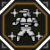
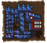
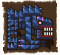
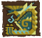
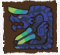
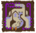
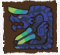
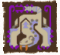

New Players Server
New Players ServerIn regards to the current progression HR1-4 should be considered an extended tutorial to early game at best. For all intents and purposes HR5 is where the game starts proper. This is why HR1-4 is the free trial, it is mostly just an introduction to the game even though it has easily as many quests as you might see in the entirety of a normal mainline title.
New Players ServerThere is a fifth tab of servers that has quests specifically for new and returning players wanting to catch up to G Rank and get ready for proper G Rank content, these give massive rewards for very little effort when compared to the normal quests. Access to these servers is indicated by this icon: and is time limited, expiration is listed on your Guild Card.
It is worth getting as much out of these servers are you can, they only give materials for things that are not terribly hard to get otherwise and nothing beyond early G level equipment. The GRP quests are especially worth grinding so you don't find yourself locked out of doing GR100 or higher content when you might want something requiring that rank for your first proper set.
This section assumes you have finished the tutorial quest line up until the point of having your first urgent available, check the basics section if you haven't reached that point yet.
Make sure to read the Frontier Base Movesets part of the Weapons section on the sidebar for an overview of the changes frontier has made to the various weapon movesets, some of the actions are not something you may try naturally and as such it is definitely worth reading to ensure you don't miss anything.
After completing the tutorial it's advisable you acquaint yourself with the town in general, check out the various NPCs and work out what they do and who sells what, help for that is in the NPC section.
A few facilities are available right from the start of the game, this includes the Gook Farm and the Helper Area.
 The Gook Farm has farm tools similar to those in the portable titles, you can use tools to get various types of materials one time per quest taken and is where you can raise Gook ducks. The Gooks themselves also give various materials including those that make gook tools, these are versions of the Pick, Bug Net and Fishing Bait that can give double the item gathered when used.
The Gook Farm has farm tools similar to those in the portable titles, you can use tools to get various types of materials one time per quest taken and is where you can raise Gook ducks. The Gooks themselves also give various materials including those that make gook tools, these are versions of the Pick, Bug Net and Fishing Bait that can give double the item gathered when used.
Check the House and AI Companions section for more information on setting up Gooks.
 The Helper Area houses both your Halk and any Partnyaas you have contracted, you can always contract two partnyaas with a third being unlocked later. Halks join you on all quests and provide configurable support, they are not huge game changers but they can be set up to heal, buff and simply attack enemies.
The Helper Area houses both your Halk and any Partnyaas you have contracted, you can always contract two partnyaas with a third being unlocked later. Halks join you on all quests and provide configurable support, they are not huge game changers but they can be set up to heal, buff and simply attack enemies.
Partnyaas are functionally just felyne companions that add extra bag space to your inventory. Generally speaking, they are worse than normal AI companions or other players for actual hunting.
You should get a Partnyaa regardless of if you intend to personally use one, as they can be sent to the Guild Hall where they can go on Treasure Hunts, this allows access to many materials and items exclusive to the Guild Cats including Quick Potions, Mega Potions and Max Potions which have the effect of Eating (extremely fast consumption) built into them.
Check the House and AI Companions section for more information on setting up Partnyaas and configuring your Halk.
You should start on the Story Quests as soon as possible at the Yellow Guildie, you can find these in her first option and should focus on the one listed at the top of the window that presents you. This provides materials for all kinds of things such as Gallery Gems and Gogomoa Armour.

The quest line you want to do is 新米獵人進階篇 which should be listed first. Do not start any others after starting the first or progress in the story line will be lost.
A full list of the quests and the most notable rewards can be found on the Google Doc.
After doing all your Key Quests you will gain access to your Urgent which allows you to progress to the next rank. All of these quests are below!
| Hunter Rank Progression | |
| HR1 Keys |
Taikun Zamuza, Yian Kut Ku, Hypnoc |
| HR1 Urgent |
Abiorugu |
| HR2 Keys |
Rathian, Dyuragaua, Volganos, Gurenzeburu |
| HR2 Urgent |
Espinas |
| HR3 Keys |
Pariapuria, Rathalos, Nono Orugaron, Rajang |
| HR3 Urgent |
Rukodiora |
| HR4 Keys |
White Hypnoc, Orange Espinas, Kuarusepusu, Doragyurosu |
| HR4 Urgent |
Akura Vashimu |
| HR5 Keys |
Baruragaru, Diorex, Toridcless, Gasurabazura, Toa Tesukatora |
| HR5 Urgent |
Supremacy Odibatorasu |
| HR6 Keys (Repels) |
Supremacy Aruganosu and Goruganosu, Supremacy Unknown |
| HR6 Urgent |
Automatic progression |
| HR7 Urgent |
Shantien |
The actual quests to take vary but are very clearly indicated by the star icon and should always sort first. It's very hard to do the wrong quests without intentionally ignoring the icons.
HR2
Hitting HR2 and getting house upgrades unlocks the option to make your own Rasta and to hire your own Partner. You can contract another player as a Rasta at the bar as well as hire your own Partner there.
Contracting someone's Rasta ASAP and using them is advisable, you will start gaining Guild Contribution Points which you can spend on either upgrading the abilities of your hired Rasta or Partner, or on purchasing items at the shop that would otherwise be unavailable from a store.
Partners end up comparable to Legendary Rastas at the end game and can easily hold their own against almost anything in the game, it is highly recommendable to spend points and time investing into them.
Check the House and AI Companions section for more information on Partners and Rastas.

HR3 is the start of High Rank. Similar to other games it simply allows you to fight stronger monsters and visit new locales. This also unlocks the entire Transcend System which is a mechanic vaguely similar to wystones that is upgraded by doing regular events.
Transcend is very powerful, when you have the various abilities upgraded fully it gives a huge amount of instant health recovery to your entire party and time based buffs of 2.0x Elemental Damage, 1.13 Raw Damage, Increased Defense and Resistances, Movement Speed Up and Super Armour to disable small knockback.
If you deal enough damage of elements or raw during the Transcend buff's duration you can also perform a Elemental Burst technique which deals incredibly high damage instantly and has additional effects such as freezing monsters in place temporarily or doing incredibly high amounts of KO.
HR4 Unlocks the Pugi farm which will allow you to gain a Garden Manager who will give you points daily, sell you cat facilities and allow you to get a Pugi to take on quests with you.
Pugis are incredibly valuable assets, they can get you extra items when carving and they can grant you extra points in armour skills by equipping them with an Outfit and a Pugi Cuff.
The Cat Facilities include a Store, Combination Booth and an Adventure booth. Respectively these eventually allow you to purchase things such as Mega Demondrugs, create items like Quick Whetstones and send cats out to gather various unique materials.
Check the House and AI Companions section for more information on the Pugi Farm.
HR5, SP, Gou Quests and Gear
In regards to the current progression HR5 should be considered the real 'start' of the game. Equipment crafted from this point often upgrades all the way to G Rank and is relevant all the way until End Game.
HR5 is where you start to fight a lot of Frontier exclusive monsters and start being introduced to some of the unique systems, starting out you'll want to immediately talk to the Purple Guildie at the Town Entrance to claim a bunch of items. These will be gone into in detail in their own sections.

These items include materials for around three different Zerureusu weapons depending on which you make, these are incredibly good weapons which give you a massive boost on starting Gou level quests.
Outside of grabbing the items you should be aware that you can only take HR5 quests outside of the first tab of servers, the second tab onwards are all fine but the first time is the beginners' server and as such is limited to quests below HR5. If you were in a beginners' server when you hit HR5 you will need to move in order to take any of the new HR5 quests.
One mechanic unique to HR5+ is the idea of negative elemental weaknesses, these cause you to deal less raw damage if you are dealing the element that the monster has a negative weakness value in. This is in contrast to simply having 0 weakness value which would cause you to simply deal raw and zero points of elemental damage. Dealing damage on a negative res spot is indicated with a special elemental FlashConversion that looks darkened compared to usual
Negative resistances work in the same way they do for positive resistances, for example if 30 Elemental weakness would add 30 damage -30 Weakness would remove 30 damage (with some degree of difference for rounding).
There is an HR5 mixed set in the Armours and Sets section, this gives nice skills for HR5 players that can easily last until G Rank. You may need to recruit people to help you with grinding out the armour as it does require grinding Brachydios, Zinogre and Diorex.
SP weapons are only really useful for Hunting Contests now. SP Armour has a long term use in gathering sets.
G10 may have made it so you don't get free Weapons.
SP Equipment is unique to HR5, all SP equipment uses materials new to HR5. Specifically, there are a number of coloured grass items (染色草‧X, X being the colour in Chinese) that you will need to gather to make most things.
The grasses are simply low% gathering items, you only need to find any colour as they can can be traded in a circluar pattern with the Veggie Elder at the Gorge (i.e. White for Red, Red for Blue, until you get back to White) until you get the ones you need.
SP weapons are completely average weapons that are solely for use on Hunting Contest Quests. Rather than normal weapon progression they simply have levels which marginally increases their stats.
You get a free SP weapon of every type (except Tonfa and Swaxe, which are G Rank exclusive) upon hitting HR5 from the purple Guildie.
SP armour is unique in that it gives no natural skill points, this is compensated for by allowing you to equip SP gems in it. Generally speaking SP gems will add at least skill alone, to compensate for how powerful SP gems are the SP Armour pieces they have relatively poor defense.
SP Gems give a large number of skill points in a single or multiple skills, they may only be equipped in SP armour.
some of these gems can be upgraded to be better than their initial versions.
There are functionally three different tiers of HR5 quests. Henshu (變種) and Kishu (奇種) are the first tier and Goushu (剛種) is the second tier and Exotics (遷悠) are the final tier.
Henshu (變種) and Kishu (奇種) are simply names to cover standard HR5 monsters. These are Normal and Sub-Species respectively (e.g. Diablos is 角龍變種 and Black Diablos is 變種奇種). These monsters are generally weaker than Gou monsters and typically are dead ends in terms of equipment progression.

Goushu (剛種) monsters covers the majority of the more powerful HR5 monsters, this includes any newer Frontier exclusives and more powerful monsters such as HR5 Elder Dragons. Most of these monsters have associated Gou Armour sets, these can almost all upgrade to G Rank levels (Burst or Origin) where they gain good skills and special abilities including boosting certain skills by a full tier (e.g. Expert+4 > Expert+5) and a large increase to damage in Critical Distance for all Ranged Weapons (30%).


 

Exotic (遷悠) monsters are simply mainline imports, they are typically ramped up from Mainline as there is no monster stamina system in the game and have new attacks. Exotics include Zinogre, Deviljho, Brachydios, Barioth, Uragaan, Nargacuga and Stygian Zinogre.

 





Gou Quests are simply mixed in with the other quests in ★5, they are indicated by the top of their quest card with 剛種任務 (Gou Species Quest). These are some of the harder HR5 content and are where you will find the majority of Frontier Exclusive monsters that have pre-G forms. The following table shows the various monsters and which section they fall under within their rank.
| HR5 Monster Breakdown | |||
| Goushu | Henshu & Kishu | ||
| Abiorugu | Lunastra | Akantor | Hypnoc |
| Inagami | Nono Orugaron | Akura Vashimu | Khezu |
| Chameleos | Harudomerugu | Yian Garuga | Rajang |
| Odibatorasu | Baruragaru | Yian Kut-Ku | Rathian |
| Kamu Orugaron | Pariapuria | Espinas | Rathalos |
| Gasurabazura | Forokururu | Plesioth | Lavasioth |
| Garuba Daora | Berukyurosu | Gravios | Rathian |
| Kirin | Poborubarumu | Gypceros | Rathalos |
| Kuarusepusu | Meraginasu | Shogun Ceanataur | Akura Jebia |
| Kushala | Yama Kurai | Daimyo Hemitaur | Kut-Ku |
| Gureadomosu | Yama Tsukami | Tigrex | Espinas |
| Gurenzeburu | Lao-Shan Lung | Diablos | Plesioth |
| Gogomoa | Rukodiora | Iodrome | Gravios |
| Shen Gaoren | Gougarfs | Cephadrome | Gypceros |
| Zerureusu | Varusaburosu | Gendrome | Diablos |
| Taikun Zamuza | Rusted Kushala | Bulldrome | Hypnoc |
| Teostra | Voljang | Velocidrome | Khezu |
| Diorex | Toridcless | Blangonga | Rathian |
| Dyuragaua | Guanzorumu | Basarios | Rathalos |
| Doragyurosu | Toa Tesukatora | Congalala | Lavasioth |
| Exotics | |||
| Zinogre | Deviljho | Brachydios | Barioth |
| Uragaan | Nargacuga | Stygian Zinogre | Gore Magala (Z1) |
| Shagaru Magala (Z1) | |||
Gou Weapons are made in their own section of the Blacksmith's crafting menu, these weapons are special in that they give ESP when you have 100% health and when upgraded and paired with upgraded Gou Armours give special bonuses on Gou and HR5 quests. They amongst the very best weapons available prior to G Rank.

Gou Weapons are made in their own section of the Blacksmith's crafting menu and generally will all require a 5 Proofs and a number of materials from the proof monster and Gou Elder Dragons.
After hitting Style Rank Gou weapons can be upgraded to Heavenly Storm weapons (天嵐武器), these grant an increase to the colour of each sharpness segment when taken on Gou or Supremacy quests when paired with Heavenly Storm armour (天嵐防具).
This means that a weapon that normally has Purple sharpness would have that turned into Cyan, which would usually be unavailable prior to G Rank. Gunners gain an affinity boost instead of the sharpness increase. Combined these boosts mean these weapons are perfect for tackling the hardest content below G Rank as they get buffs beyond that available on other weapons.
Gou Armours, like weapons, are made in their own section of the Blacksmith's menus. They are very notable in that they give bonus levels to certain skills this bonus is based on the number of pieces of Gou Armour you have equipped and your own status (Details Here.)
Gou armours also give a lot of skill points in general making them ideal to mix and match with.

All Gou Armour pieces require proofs and 1 Gou Elder Dragon Gem (古龍種的稀玉) from Gou Rukodiora. There is a quest that can cycle in that has 100% chance of giving a gem which is ideal for creating Gou Armours. You will also be given 3 of these gems upon the creation of your first Gou Weapon.
A number of Gou Armours also upgrade all the way to G Rank as Burst Armour (烈種防具), these armour pieces are incredibly useful in that they always give you bonus levels to any boostable skills as long as you have a Single Piece equipped.
Exotic Monsters are the first mainline imports to MHF since Tigrex and Akantor were added in 2007. The base form of these monsters is available to be fought as soon as you hit HR5. Zinogre, Deviljho and Brachydios are all available with G8.


All standard weapons have HR5 equipment for Exotic monsters, this equipment does not upgrade at all until you are at G Rank at at rank GR500 but is very solid.
Exotic Weapons are unique in that they provide the Quick Eating skill while equipped, they also have a special slot type that is only relevant when at G Rank.
Exotic Armour is mostly the same as any other standard armour however, it is unique in that any equipping any single piece will always grant a set skill based on the set that you have equipped a piece from.
For example equipping any piece of Zinogre Armour whether it be the Head, Chest or any other piece will give you Thunder Attack [Large], this is completely free and does not affect any other skills nor does it need skill points.
Supremacy Quests are quests against powerful variants of monsters that you can fight starting at HR5, they each give various items that are unique to the monster type within them which are used to upgrade Gou weapons and armour past Heavenly Storm levels.
Monsters with supremacy variants in are Pariapura, Unknown, Doragyurosu, Teostra and Odibatorasu.
Lavasioth has Aruganosu and Goruganosu as its supremacy form, they are a pair of Silver and Gold monsters which must always be fought as a duo and use various combo attacks that make use of the Ice and Thunder elements. They are unique in that they both must be reduced to 1hp in order for either of them to die, see the Monsters section for info.


Supremacy monsters are all powerful and capable of causing even G Rank players to cart instantly if not careful. Supremacy monsters also count as being HC for the sake of HC armour regen and HC bonuses. Odibatorasu is the easiest of the Supremacy monsters.
Supremacy quests all grant a number of unique materials to each quest, the quantity of these you get is based on a number of factors, carting and using a halk pot reduces the overall reward pool and RNG plays a role in getting extras. These materials are used to craft and upgrade Gou weapons and G Supremacy weapons later as well as for upgrading all Gou armours.
Although you have to fight Supremacy Monsters to progress to G Rank you do not actively need their items. There are a number of items exclusively found on Supremacy monsters which are used for upgrading anything from a Gou Armour or Weapon tree. Your first sets are quite likely to use these and any gunning set will always want at least one Origin piece.
| There is usually also an HR6 Repel Quest in the events section that gives fixed 4 stacks of bloods. Look on page 4 of quest info for the item name. | |
| Supremacy Bloods (鮮烈的滾血) | |
| Monster | Repel Quest / Hunt Quest / Successful Kill |
| Odibatorasu | 10% / 18% / 17% |
| Unknown | 10% / 19% / 22% |
| Lavasioths | 10% / 21% / 23% |
| Pariapuria | 10% / 20% / 24% |
| Doragyurosu | 10% / 22% / 25% |
| Teostra | 10% / 23% / 25% |
| Successful Hunt Quests also give 1x Supremacy Blood fixed. | |
| Monster Unique Items | |
| Monster | Unique Item |
| Odibatorasu | 弩岩龍的崩鱗 Odi Supremacy Scale |
| Doragyurosu | 冥雷龍的焦鱗 Dora Supremacy Scale |
| Teostra | 炎王龍的灼翼 Teostra Supremacy Wing |
| Unknown | 飛龍的碎爪 Unknown Supremacy Claw |
| Pariapuria | 吞龍的爛石 Pariapuria Supremacy Stone |
| Lavasioths | 金銀魚龍的亂殼 Gold and Silver Supremacy Shell |
Successful Slays also give 2x Unique Materials fixed. Not using a Halk Pot gives 1x Unique Material Fixed. | |
For farming the individual monster's unique items for Supremacy weapons it is much more efficient to simply farm the repel quests as they grant 2x stacks of the item at around 38-40% per roll. For bloods slay quests are far superior giving almost double roll percentages and multiple types of rolls.
If you're actively playing there's a few time based things you should be doing each day:
| Guild Rewards | As long as you're a member of a Guild you get free items every day, check the English Guild section for details (resets at 00:00). |
| Daily Quest Halk Pots N Points | A Daily Quest can be claimed on the Pink Guildie each day. You can only have one available and as such you must use one on a quest before you can be eligible for another. This does not stop you grabbing it and losing out on a Daily. This means you should always take your Daily before grabbing N Points. Daily Quests are generally best used on either Hiden dailies or event quests. Grabbing the quest also gives you a 5 stack of Halk Pots and 5 N Points. |
| Pugi Points | If you're HR4 you should be subscribed and getting points each day from your manager to work towards your Pugi and Cat Facilities (resets and updates at 00:00). |
| Rasta Materials | If you have your Rasta contracted out to other players and they are actively playing, or vice versa, you will get small amounts of materials based around what has been hunted each day. These are usually junk but you can get G Rank and Zenith materials rarely. (Obtained from the Bar, right Bar NPC last option. |